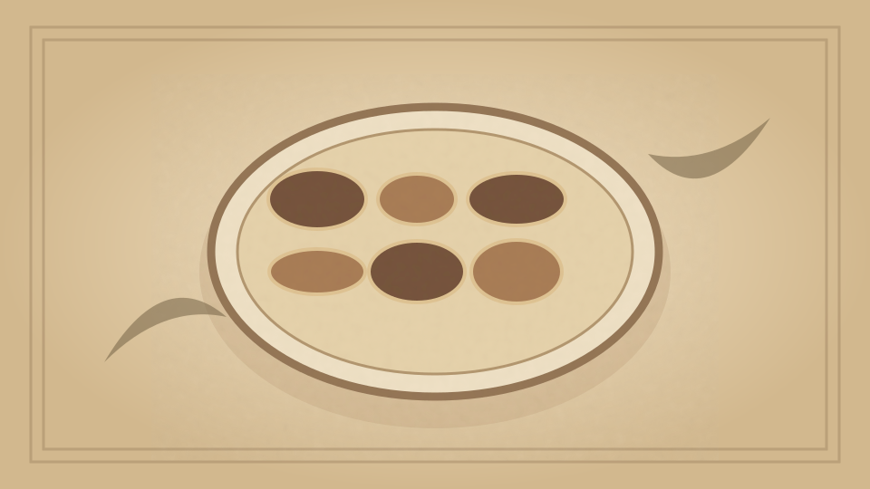

1910 · Fannie Merritt Farmer · FISH
Oyster Cocktail I
The Boston Cooking-School Cook Book
❧ ───── ❦ ───── ❧

Historical Recipe
The following text is extracted from the 1910 edition, retaining historical terminology and quantities.
Original Ingredients & Directions
8 small raw oysters
1 tablespoon tomato catsup
½ tablespoon vinegar or lemon juice
2 drops Tabasco
Salt
1 teaspoon celery, finely chopped
½ teaspoon Worcestershire Sauce
Mix ingredients, chill thoroughly, and serve in cocktail glasses, or cases made from green peppers placed on a bed of crushed ice.
Automatically extracted transcription; editorial verification pending. Historical instructions may not meet modern food-safety standards.